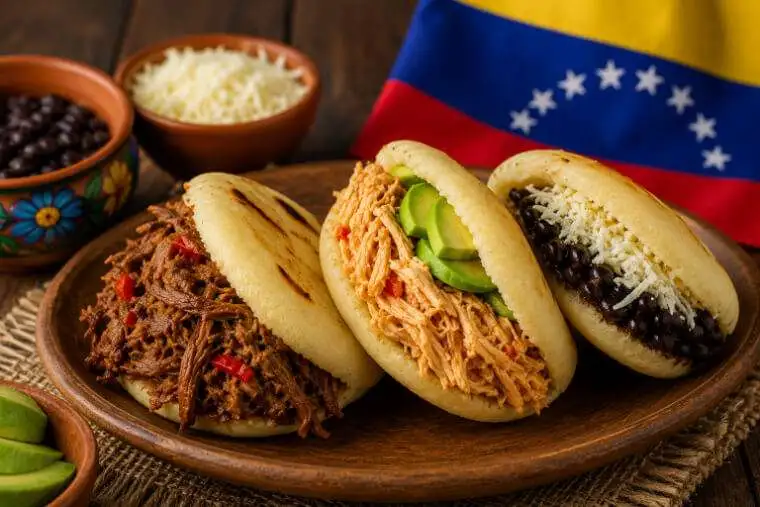

Arepas

About this dish
Intro paragraph: what it is, where it comes from, when it's eaten.
Ingredients
- 2 cups precooked white corn flour
- 2 ½ cups warm water
- 1 tsp salt (salt to taste)
Prepatation
- First step.
- Second step.
- Thrid step.

Intro paragraph: what it is, where it comes from, when it's eaten.